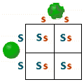
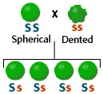
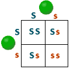
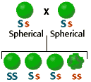

Monohybrid Cross Problem Set
Problem 3: Mendel's "Experiment 1"
Tutorial to help answer the question
| In Mendel's "Experiment 1," true-breeding pea plants with spherical seeds were crossed with true-breeding plants with dented seeds. (Spherical seeds are the dominant characteristic.) Mendel collected the seeds from this cross, grew F1-generation plants, let them self-pollinate to form a second generation, and analyzed the seeds of the resulting F2 generation. The results that he obtained, and that you would predict for this experiment are: |
Tutorial
F1-generation plants|
Mendel crossed SS (spherical seeds) with ss (dented seeds.) All of the gametes of the spherical seeded parent have the S (dominant) allele and all of the gametes of the dented seeded parent have the s (recessive) allele. All of the F1 generation plants will have the genotype of Ss (heterozygous), and all will be spherical seeded. |
|  | = |
 |
F2-generation plants
| Mendel let the F1-generation plants self-pollinate to form a second generation and he analyzed the seeds of the resulting F2 generation. |
|  |
= |
 |
| All F1-hybrid plants have the genotype Ss and all are spherical (dominant characteristic). The recessive alleles segregate during gamete formation. As a result, one out of four possible combinations of F2-generation plants will have the homozygous recessive genotype (ss). |


The Biology Project
Department of Biochemistry and Molecular
Biophysics
University of Arizona
Thursday, October 1, 1998
Revised: November 2004
Contact the Development Team
http://biology.arizona.edu
All contents copyright © 1998-2004. All rights reserved.